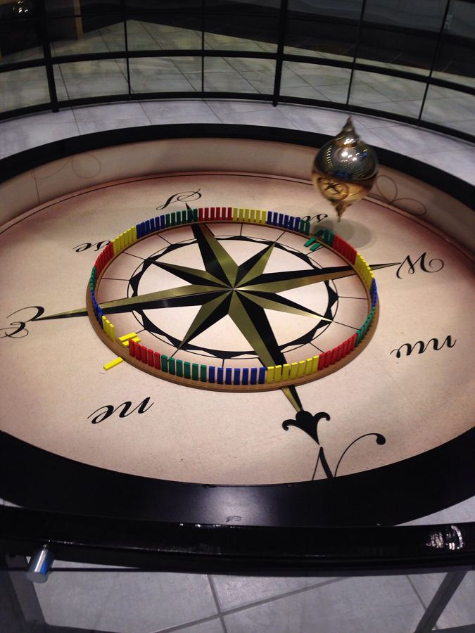

What makes the harmonic oscillator model applicable to such a wide range of phenomena?
Review videosC.1 lecture · Elec2ric LearningTopic C playlist · Sirius Revision
Simple harmonic motion (SHM) is the physics of restoring forces. Whenever a displaced body experiences a force directed back towards its equilibrium position, and that force is proportional to the displacement, the body will oscillate sinusoidally. The defining equation a = −ω²x encodes both conditions: the negative sign means restoring (back towards equilibrium), and the proportionality means the oscillation is mathematically simple enough to solve exactly.
The model is powerful because it appears everywhere: a mass on a spring, a pendulum for small angles, a charged particle in a parabolic potential, an atom vibrating in a crystal lattice, a current oscillating in an LC circuit. Once you know SHM, you know the shape of all these motions.
An object moves with simple harmonic motion when the resultant force on it meets two conditions at once:
Together these give F = −kx. The minus sign says the force points the opposite way to the displacement. A mass on a spring meets both conditions exactly. A pendulum meets them for small swings, below about 10°, where sin θ ≈ θ in radians.
Worked example
A mass hangs on a spring with k = 20 N m−1. It is pulled 0.05 m below equilibrium.
Restoring force = kx = 20 × 0.05 = 1.0 N, upwards.
Pull it to 0.10 m instead: 20 × 0.10 = 2.0 N, upwards. Push it 0.05 m above equilibrium: 1.0 N, downwards.
Double the displacement and the force doubles; move to the other side and the force flips to point back. Both conditions hold, so the motion is SHM.
Check 1. A ball bounces up and down on a hard floor, again and again. Is this simple harmonic motion?
No. While the ball is in the air the only force on it is its weight, which is constant. It does not grow with displacement, so the second condition fails. The motion repeats, but it is not simple harmonic.
Check 2. A block on a spring is pushed 3 cm to the left of equilibrium, and the restoring force is 0.6 N. What is the restoring force when the block is 6 cm to the right of equilibrium?
1.2 N, to the left. Twice the displacement gives twice the force, and it points back towards equilibrium.
Newton's second law turns the restoring force F = −kx into ma = −kx, so a = −(k/m)x. Writing ω² = k/m gives the defining equation a = −ω²x.
It says two things. The acceleration is proportional to the displacement, and the minus sign means it points towards equilibrium, the opposite way to the displacement. A graph of a against x is a straight line through the origin with gradient −ω².
Worked example
A 0.50 kg mass is on a spring with k = 18 N m−1.
ω² = k/m = 18 / 0.50 = 36 s−2, so ω = 6.0 rad s−1.
At x = +0.04 m: a = −36 × 0.04 = −1.4 m s−2, i.e. 1.4 m s−2 back towards equilibrium.
Check 1. Where in the oscillation is the acceleration zero, and where is it largest?
Zero at the equilibrium position (x = 0). Largest at the two extremes (x = ±x₀), where the displacement is largest.
Check 2. A graph of acceleration against displacement for an oscillator is a straight line with gradient −25 s−2. Find ω and the period T.
ω² = 25, so ω = 5.0 rad s−1. T = 2π/ω = 2π/5.0 = 1.3 s.
Worked example
A pendulum bob swings from its far left to its far right in 0.80 s. The two extremes are 12 cm apart.
Amplitude = half the distance between extremes = 6.0 cm.
Left to right is half an oscillation, so T = 2 × 0.80 = 1.6 s, f = 1/1.6 = 0.63 Hz, ω = 2πf = 3.9 rad s−1.
Check 1. A mass on a spring moves between 4 cm above and 4 cm below equilibrium. What is the amplitude, and how far does the mass travel in one period?
Amplitude 4 cm. In one period it goes down 8 cm and back up 8 cm: 16 cm, which is 4x₀.
Check 2. A mass is released from rest at x = +5 cm. What is its displacement after half a period, and after one full period?
After half a period: −5 cm (the other extreme). After one period: +5 cm, back where it started.
Frequency counts oscillations per second, so the time for one is T = 1/f. Angular frequency counts radians per second, and one full oscillation is 2π radians, so ω = 2πf and T = 2π/ω.
Worked example
A tuning fork vibrates at 256 Hz.
T = 1/f = 1/256 = 3.9 × 10−3 s.
ω = 2πf = 2π × 256 = 1.6 × 103 rad s−1.
Check 1. An oscillator has ω = 12 rad s−1. Find T and f.
T = 2π/12 = 0.52 s. f = 1/T = 1.9 Hz.
Check 2. A mass completes 30 oscillations in 24 s. Find T, f and ω.
T = 24/30 = 0.80 s. f = 1/0.80 = 1.25 Hz. ω = 2π/0.80 = 7.9 rad s−1.
For a spring, ω² = k/m, and T = 2π/ω gives T = 2π√(m/k). A heavier mass gives a longer period; a stiffer spring gives a shorter one.
Two quantities are absent from the equation, and that is part of the physics: the period does not depend on the amplitude, and it does not depend on g, so the same spring has the same period on the Moon. Squaring gives T² = (4π²/k) m, which is why we graphed our 7 September spring data as T² against m: a straight line with gradient 4π²/k.
Worked example
A 0.40 kg mass hangs on a spring with k = 25 N m−1.
T = 2π√(0.40 / 25) = 2π√0.016 = 2π × 0.126 = 0.79 s.
Replace it with a 1.60 kg mass (four times heavier) and T doubles to 1.6 s, because T ∝ √m.
Check 1. The mass on a spring is doubled. By what factor does the period change?
T ∝ √m, so the period increases by a factor of √2 ≈ 1.41.
Check 2. A graph of T² against m has gradient 0.20 s2 kg−1. Find the spring constant.
Gradient = 4π²/k, so k = 4π²/0.20 = 2.0 × 102 N m−1.

l is the length from the pivot to the centre of the bob. The mass of the bob does not appear: a heavy bob and a light bob on the same string swing with the same period. The equation holds for small swings (see point 1).
Squaring gives T² = (4π²/g) l, which is why our 21 September lab plotted T² against l: a straight line with gradient 4π²/g, giving a value for g.
Worked example
A pendulum is 0.80 m long. Take g = 9.81 m s−2.
T = 2π√(0.80 / 9.81) = 2π × 0.286 = 1.8 s.
Check 1. The bob is replaced with one twice as heavy, on the same string. What happens to the period?
Nothing. Mass does not appear in T = 2π√(l/g).
Check 2. A pendulum has a period of exactly 2.00 s. How long is it?
l = gT²/4π² = 9.81 × 4.00 / 39.5 = 0.994 m, just under a metre.
Energy moves back and forth between kinetic and potential energy.
The object passes through equilibrium twice in every period, so kinetic energy peaks twice per cycle: the energy swaps at twice the frequency of the motion.
Worked example
A pendulum is released from rest at its far left.
At release: all gravitational potential energy. At the bottom: all kinetic energy. At the far right: all potential energy again. Back at the bottom: all kinetic. Back at the far left: one full period, and kinetic energy has peaked twice.
Check 1. A mass on a spring has a period of 1.0 s. How often does its kinetic energy reach a maximum?
Every 0.5 s, twice per period, each time it passes through equilibrium.
Check 2. Air resistance acts on a swinging pendulum. What happens to its total energy and its amplitude over time?
Both decrease. Energy is transferred to thermal energy in the air, so each swing is a little smaller. This is damping, which you meet again in C.4.
The phase angle φ says where in its cycle an oscillator is at t = 0. It is measured in radians, and one full cycle is 2π rad.
Worked example
Using x = x₀ sin(ωt + φ):
Released from rest at +x₀ at t = 0: sin φ = 1, so φ = π/2, and x = x₀ sin(ωt + π/2) = x₀ cos ωt.
Passing through equilibrium, moving in the positive direction, at t = 0: sin φ = 0, so φ = 0, and x = x₀ sin ωt.
Check 1. Two identical pendulums: A is at +x₀ at the instant B is at −x₀. What is the phase difference?
π rad. They are in antiphase.
Check 2. Two pendulums both have T = 2.0 s. B reaches its extreme 0.50 s after A. What is the phase difference?
φ = (0.50 / 2.0) × 2π = π/2 rad, a quarter of a cycle.
Worked example
A 0.50 kg mass on a spring with k = 32 N m−1 is released from rest at x₀ = 0.050 m.
ω = √(32 / 0.50) = 8.0 rad s−1. Maximum speed = ωx₀ = 8.0 × 0.050 = 0.40 m s−1.
Speed at x = 0.030 m: v = 8.0 √(0.050² − 0.030²) = 8.0 × 0.040 = 0.32 m s−1.
Released from +x₀, so φ = π/2 and x = 0.050 cos(8.0t). At t = 0.10 s: x = 0.050 cos(0.80) = 0.035 m.
Check 1. An oscillator has ω = 4.0 rad s−1 and amplitude 0.10 m. Find its maximum speed, and its speed at x = 0.060 m.
vmax = 4.0 × 0.10 = 0.40 m s−1. At x = 0.060 m: v = 4.0 √(0.010 − 0.0036) = 4.0 × 0.080 = 0.32 m s−1.
Check 2. An oscillator follows x = 0.20 sin(5.0t), in metres and seconds. Find x at t = 0.50 s.
x = 0.20 sin(2.5 rad) = 0.20 × 0.598 = 0.12 m.
For a spring, mω² = k, so Ep = ½kx², the elastic energy you already know.
Worked example
The oscillator from point 9: m = 0.50 kg, ω = 8.0 rad s−1, x₀ = 0.050 m.
ET = ½ × 0.50 × 8.0² × 0.050² = 0.040 J.
At x = 0.030 m: Ep = ½ × 0.50 × 64 × 0.030² = 0.014 J, so Ek = 0.040 − 0.014 = 0.026 J.
Cross-check with point 9: ½mv² = ½ × 0.50 × 0.32² = 0.026 J. The two routes agree.
Check 1. The amplitude of an oscillator is doubled. By what factor does its total energy change?
ET ∝ x₀², so it increases by a factor of 4.
Check 2. At what displacement are the kinetic and potential energies equal?
When Ep = ½ET: ½mω²x² = ¼mω²x₀², so x² = x₀²/2 and x = x₀/√2 ≈ 0.71x₀.